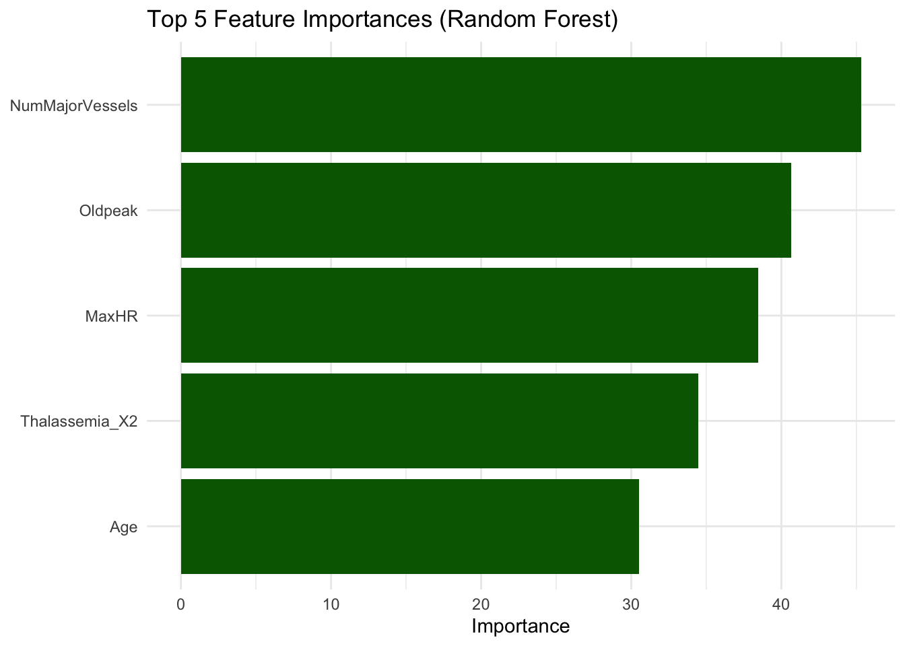

We trained a random forest model using the ranger engine in the tidymodels framework. This ensemble method aggregates multiple decision trees to improve prediction accuracy and reduce overfitting.
The random forest model shows strong classification performance:
True Negatives (0 correctly predicted): 150
True Positives (1 correctly predicted): 148
False Positives: 10
False Negatives: 0
This indicates excellent sensitivity (no false negatives) and high specificity, suggesting that the model accurately identifies both patients with and without heart disease, with minimal misclassification.
The ROC curve for the random forest model climbs sharply to the top-left corner, indicating excellent discriminative ability. This shape suggests the model maintains a high true positive rate with minimal false positives across thresholds. The nearly perfect curve confirms that the random forest is highly effective at ranking heart disease risk and likely achieves an AUC close to 1.
5.4 Train vs. Test Comparison
Code
# Generate predictions on training setrf_preds_train <-predict(rf_fit, heart_train, type ="prob") %>%bind_cols(predict(rf_fit, heart_train)) %>%bind_cols(heart_train)# Evaluate accuracy and AUC on training setrf_train_metrics <-bind_rows(accuracy(rf_preds_train, truth = HeartDisease, estimate = .pred_class),roc_auc(rf_preds_train, truth = HeartDisease, .pred_1, event_level ="second"))rf_train_metrics
The random forest model achieved near-perfect performance on the training set, with an accuracy of 0.997 and an AUC of 1.000. This suggests that the model has learned the training data extremely well. However, such high scores raise concerns about potential overfitting, especially if the model’s performance on the test set is significantly lower. Close monitoring of test results is necessary to ensure generalization and avoid overly optimistic training metrics.
# Plotvip_rf %>%ggplot(aes(x =fct_reorder(Feature, Importance), y = Importance)) +geom_col(fill ="darkgreen") +coord_flip() +labs(title ="Top 5 Feature Importances (Random Forest)", x =NULL, y ="Importance")

We observe that NumMajorVessels and Oldpeak are consistently ranked as top features, highlighting their predictive importance for heart disease. These will be compared with LIME explanations in later sections.
5.5 Save for Comparison
Code
# Save top features for LIME comparisonrf_top_features <- vip_rf$FeaturesaveRDS(rf_top_features, file ="scripts/rf_top_features.rds")# Save fitted model for LIME explanationsaveRDS(rf_fit, file ="scripts/rf_fit.rds")
5.6 Summary
This random forest model generally performs better than a single decision tree due to its ensemble nature.
It will also be evaluated using LIME to understand its local predictions.